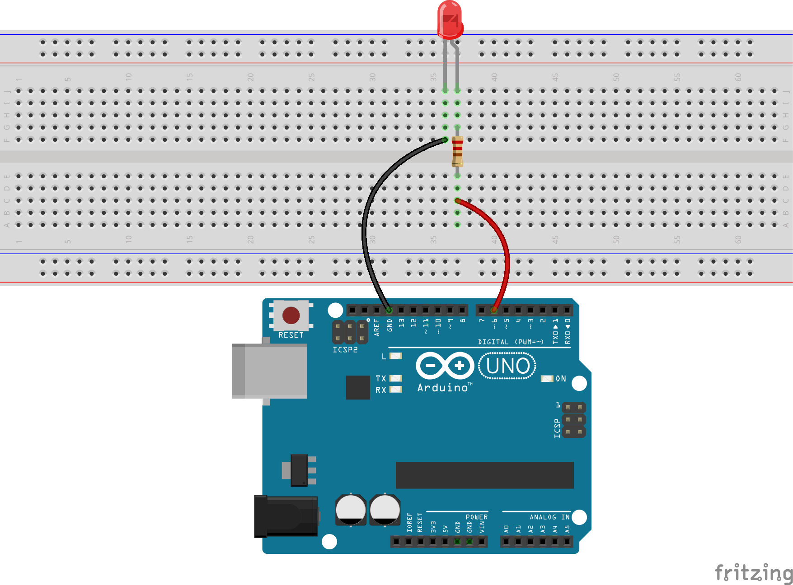
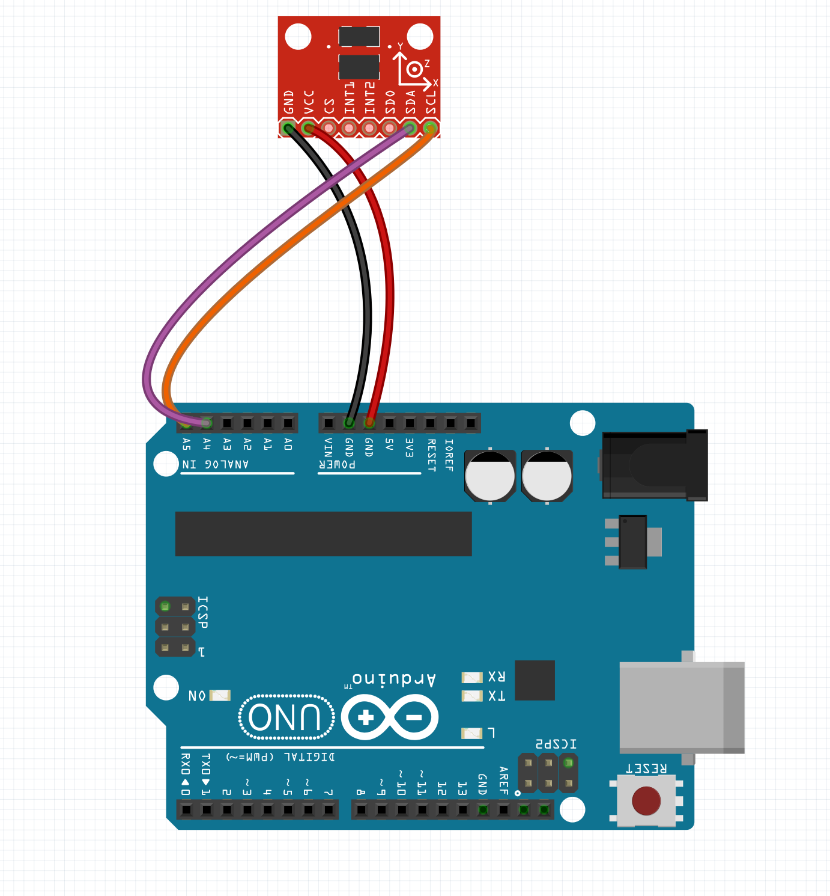
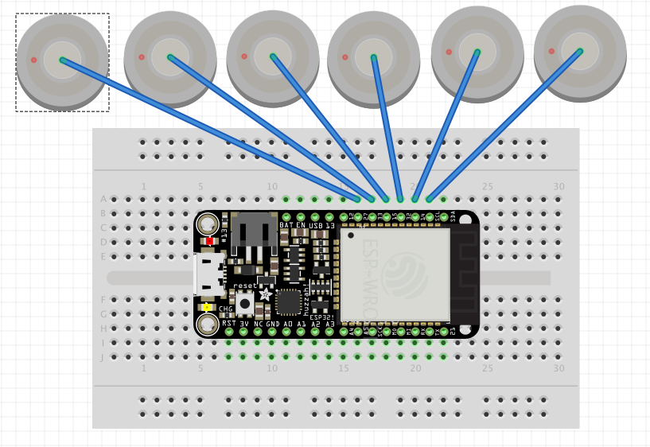

Physical Computing: 2
Physical Computing: 2
Physical Computing: 2
Physical Computing: 2
Slides are here:
http://mhellar.github.io/physcomp2/3
<<<<<<< HEAD
Grab the code here:
http://bit.ly/2s6rk1T
- Projects
- Fritzing
- Twitter Lamp
- Twitter Button
- Introduction to the ESP8266
Topics for Today:
Fritzing.org
Project: Twitter Lamp

Make this circuit
Go Here:
https://apps.twitter.com/

create a new app
Gather tokens and keys

Update code in code/twitter-ard/app.js
var client = new Twitter({
consumer_key: 'Enter Here',
consumer_secret: 'Enter Here',
access_token_key: 'Enter Here',
access_token_secret: 'Enter Here'
})
From the terminal:
'cd twitter-ard'
'node app.js'
From the terminal:
'cd twitter-ard-location'
'node app.js'
Twitter API Reference
Here
Project: Twitter Button


Update code in code/twitter-ard/app.js
var client = new Twitter({
consumer_key: 'Enter Here',
consumer_secret: 'Enter Here',
access_token_key: 'Enter Here',
access_token_secret: 'Enter Here'
})
From the terminal:
'cd twitter-button'
'node app.js'
The ESP8266
We need to solder the header pins on, let's do that now
The ESP8266 is a low-cost Wi-Fi chip with full TCP/IP stack and MCU (Micro Controller Unit) capability produced by Shanghai-based Chinese manufacturer, Espressif Systems.
The Adafruit Feather is a mini Arduino with Wifi, that is $16.00!
Getting Set up:
- First install the USB driver SiLabs serial driver
Getting Set up:
- Next go to the Arduino Preferences

Enter http://arduino.esp8266.com/stable/package_esp8266com_index.json into Additional Boards Manager URLs
Getting Set up:
- Next, use the Board manager to install the ESP8266 package.

Getting Set up:
Set Board to Adafruit HUZZAH ESP8266
Set port to SLABusbtoUART
Connect an led
Anode to Pin 2, Cathode to GND
Upload Blink
Upload WiFiWebServer
Upload ESPwebpage
Hook Up A Servo
Black to GND, Red to Bat, Yellow to pin 5
Upload ESPwebpageServo
Grab the code here:
https://bit.ly/2s6rk1T
- Workshop
- Fritzing
- Soldering excercise
- Introduction to the ESP32
- the MQTT Protocol
Topics for Today:
Connections
GND -> GND
5V -> 5V
Vrx -> A1
Vry -> A0
SW -> 2
Upload joystick with arduino
cd 'joystick_p5js' && npm install && node app.js && localhost:3000 in the browser
We will use the smoothiecharts library to plot the joystick data
Open 'serial_ws_joystick_chart' in your text editor. On line 8 of index.js set the serial port to your serial port
cd 'serial_ws_joystick_chart' && npm install && node app.js && localhost:3000 in the browser
Use the builder to style the chart
An accelerometer is an electromechanical device that will measure acceleration forces. These forces may be static, like the constant force of gravity pulling at your feet, or they could be dynamic - caused by moving or vibrating the accelerometer.By measuring the amount of static acceleration due to gravity, you can find out the angle the device is tilted at with respect to the earth. By sensing the amount of dynamic acceleration, you can analyze the way the device is moving.
ADXL354 accelerometer
- Connect
- GND to GND
- 3v to 3v
- SCL to A5
- SDA to A4
- Open the Library Manager in Arduino
- Install Adafruit ADXL Library
- Install Adafruit Universal Sensor Library
- Install ArduinoJSON Library
- Run Sensortest from the Examples
- Before going further lets a take looks at Arduino JSON
- Upload JsonGeneratorExample
- Open the serial monitor at 9600 BAUD
- From arduino upload adxl345_json_serial.ino
- This adds ArduinoJSON to the Sensortest
- cd adxl_threejs_serial & open in text editor
- Edit port setting on line 8 of index.js
- NPM install & node index.js & open localhost:3000
Fritzing.org
The ESP32

ESP32 Pinout
Install This Driver
HereInstall for you platform
HereConnect an LED, Anode to pin 12 w/resistor, Cathode to GND

In Arduino set the board to Adafruit ESP32 Feather
Upload esp32/blink
Connect your laptop to the Gray Area Incubator
password: grandstand
Upload esp32/SimpleWiFiServer
Once uploaded open the serial monitor at to 115200 baud
Hit the reset button on the ESP32, it will connect to wifi and display an IP address go to this address in the browser
OSC on the ESP32: Install the OSC library
Open ESP8266Send Message
Edit Lines 18-23, set the wifi and your computers IP address
Open the NodeJS program, esp32/OSC in you terminal
npm install & node index.js
Connect the accelerometer:

Open esp32/adxl345_osc Message
Edit Lines 18-23, set the wifi and your computers IP address
Open the NodeJS program, esp32/OSC in your terminal
node index.js
Open the NodeJS program, esp32/adxl_threejs_osc in you terminal
npm install & node index.js & open localhost:3000


Open a terminal
sudo npm install mqtt -g
Open a terminal
sudo npm install mosca bunyan -g
mosca -v | bunyan
Open a second terminal
mqtt sub -t '/hello' -h 'localhost'
Open a third terminal
mqtt pub -t '/hello' -h 'localhost' -m 'hi from me'
Open a third terminal
mqtt pub -t '/hello' -h 'localhost' -m 'My message'
In Arduino install the PubSubClient Library
Connect some touch Pins
Upload esp32/ESP32TouchInterruptMQTT.ino
Set the Wifi to Gray Area Incubator and grandstand
Set the MQTT server to your IP address
Open a terminal
mqtt sub -t '/hello' -h 'localhost'